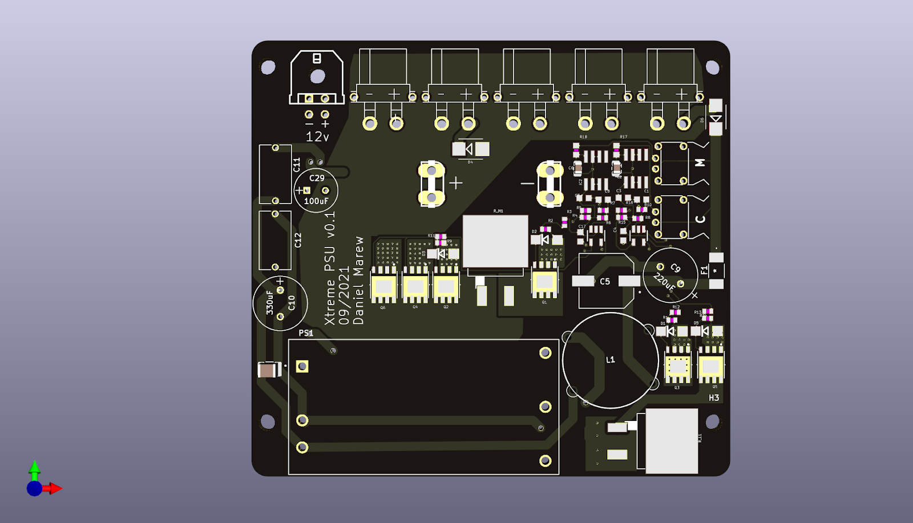
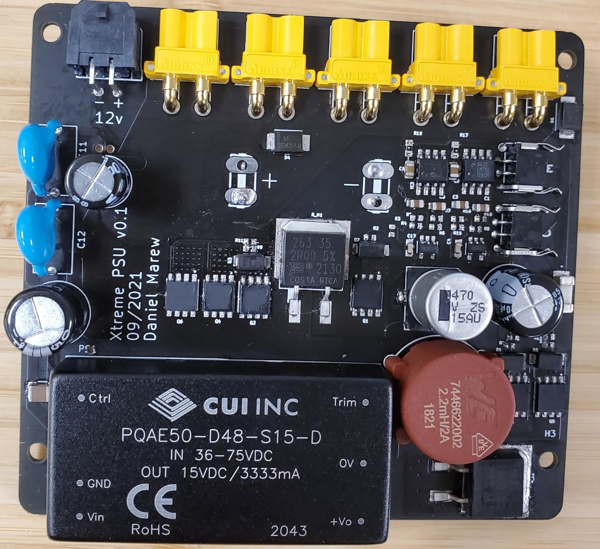
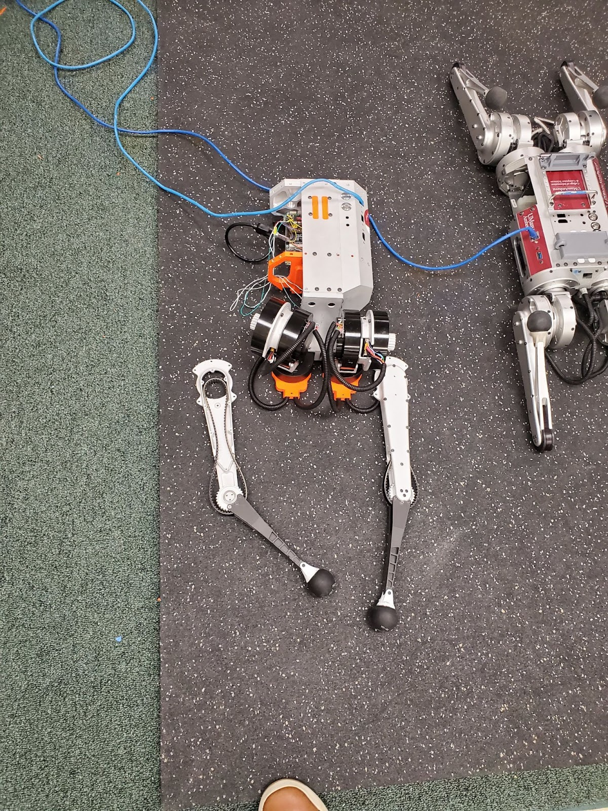
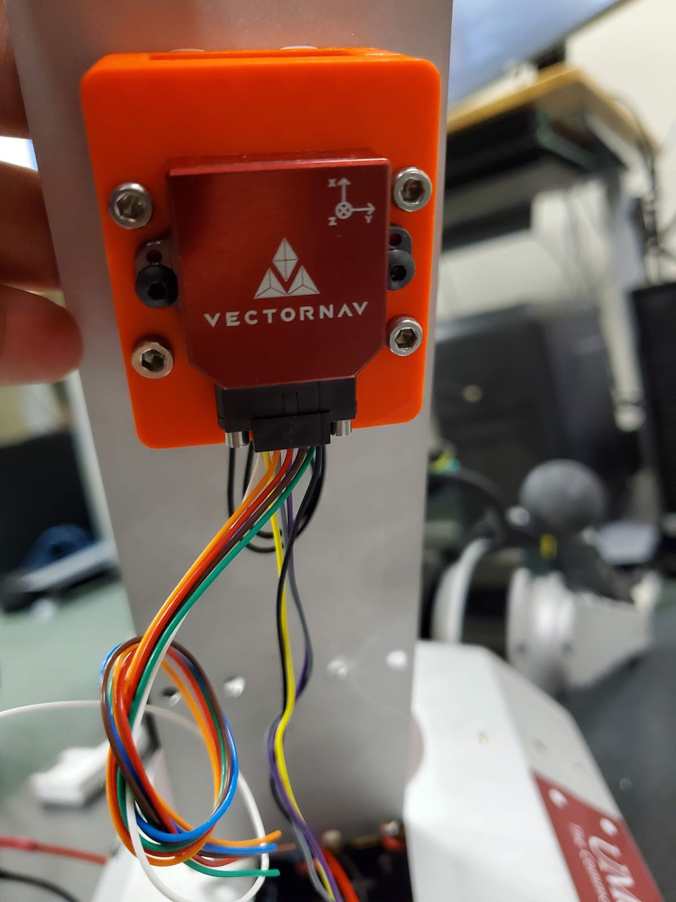

Pat: The 6 DoF Point-foot Biped

Overview
Pat is a 70 cm, 5.4 kg, 6 Degree of Freedom (DoF) point-foot biped made entirely from off-the-shelf components. Point-foot bipeds are relatively simple legged systems structurally, but since they are severely underactuated and highly unstable, they are extremely challenging to control. This makes them an ideal experimental platform for testing the limits of dynamic biped locomotion.


Power Distribution Board Design
Custom power distribution board based on Ben Katz's PDB design for MIT Mini Cheetah adapted to handle higher voltage and current requirements of UPboard-Xtreme SBC.
Hardware Assembly & Testing (Part 1)
Testing CAN communication between the UPboard-Xtreme SBC and T-motor actuators via PCAN-miniPCIe FD interface.


Robot Assembly
MPC Control Architecture
Demonstration of Model Predictive Control (MPC) running on Pat to achieve stable balancing and dynamic movements despite the challenging point-foot constraints.